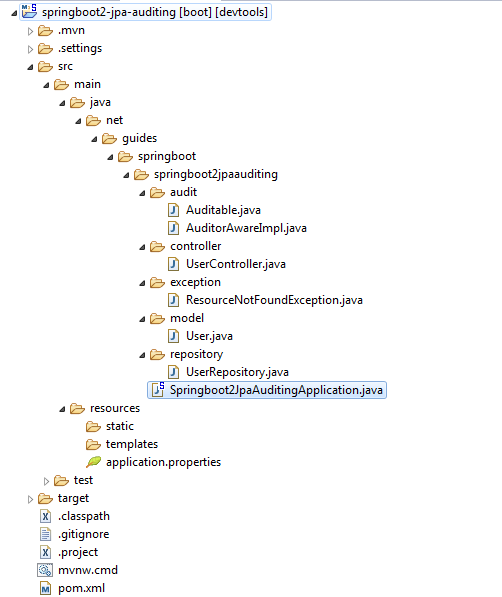
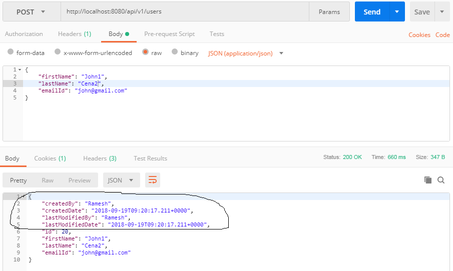

Spring Data JPA Auditing with Spring Boot and MySQL Example
In this article, we will discuss how can we configure JPA to automatically persist the CreatedBy,
CreatedDate, LastModifiedBy, and LastModifiedDate columns for any entity. We will create a simple
Spring Boot CRUD REST APIs and we implement auditing using spring data JPA.
This tutorial is upgraded to Spring Boot 3+ and Java 17.
In any business application, auditing simply means tracking and logging every change we do in our persisted records, which simply means tracking every insert, update, and delete operation and storing it. Basically, auditing helps us in maintaining history records, which can later help us in tracking user activities.
Instead of writing code manually on each save, update, or delete operation why do not we use a third-party library to do it automatically for us. Spring Data provides sophisticated support to transparently keep track of who created or changed an entity and the point in time this happened. To benefit from that functionality you have to equip your entity classes with auditing metadata that can be defined either using annotations or by implementing an interface.
In this example, we will create a common generic Auditable abstract class
with audit fields so that any entity can extend it to use auditing.
Table of Contents
- What we’ll build
- Tools and Technologies Used
- Creating and Importing a Project
- Packaging Structure
- The pom.xml File
- Configuring MySQL Database
- Create Generic Auditable Class with Spring Data Annotations
@CreatedBy,@CreatedDate,@LastModifiedBy, and@LastModifiedDate - Create a JPA Entity which extends
AuditableClass - User.java - Auditing Author Using AuditorAware and Spring Security
- Enable JPA Auditing by Using
@EnableJpaAuditing - Create Spring Data JPA Repository - UserRepository.java
- Creating UserController(Contains REST APIs)
- Running the Application
1. What we’ll build
We are building a simple Spring boot CRUD Rest APIs to demonstrate the usage of Spring Data JPA auditing with MySQL as a database.
2. Tools and Technologies Used
- Spring Boot - 3
- JDK - 17 or later
- Spring Framework - 6+
- Maven - 3.2+
- IDE - Eclipse or Spring Tool Suite (STS)
- MYSQL
3. Create and Set up Spring Boot Project
There are many ways to create a Spring Boot application. The simplest way is to use Spring Initializr at http://start.spring.io/, which is an online Spring Boot application generator.
Use the following details while generating a Spring Boot project using Spring Initializr:
- Generate: Maven Project
- Java Version: 17 (Default)
- Spring Boot: 30.4
- Group: net.guides.springboot
- Artifact: springboot2-jpa-auditing
- Name: springboot2-jpa-auditing
- Package Name: net.guides.springboot.springboot2jpaauditing
- Packaging: jar (This is the default value)
- Dependencies: Web, JPA, MySQL, DevTools
Once, all the details are entered, then click on Generate Project button will generate a spring boot project and downloads it. Next, Unzip the downloaded zip file and import it into your favorite IDE.
4. Packaging Structure
Following is the project structure for your reference -
5. The pom.xml File
<?xml version="1.0" encoding="UTF-8"?>
<project xmlns="http://maven.apache.org/POM/4.0.0" xmlns:xsi="http://www.w3.org/2001/XMLSchema-instance"
xsi:schemaLocation="http://maven.apache.org/POM/4.0.0 http://www.apache.org/xsd/maven-4.0.0.xsd">
<modelVersion>4.0.0</modelVersion>
<groupId>net.guides.springboot</groupId>
<artifactId>springboot2-jpa-auditing</artifactId>
<version>0.0.1-SNAPSHOT</version>
<packaging>jar</packaging>
<name>springboot2-jpa-auditing</name>
<description>Demo project for Spring Boot</description>
<parent>
<groupId>org.springframework.boot</groupId>
<artifactId>spring-boot-starter-parent</artifactId>
<version>3.0.4</version>
<relativePath/> <!-- lookup parent from repository -->
</parent>
<properties>
<project.build.sourceEncoding>UTF-8</project.build.sourceEncoding>
<project.reporting.outputEncoding>UTF-8</project.reporting.outputEncoding>
<java.version>17</java.version>
</properties>
<dependencies>
<dependency>
<groupId>org.springframework.boot</groupId>
<artifactId>spring-boot-starter-data-jpa</artifactId>
</dependency>
<dependency>
<groupId>org.springframework.boot</groupId>
<artifactId>spring-boot-starter-web</artifactId>
</dependency>
<dependency>
<groupId>org.springframework.boot</groupId>
<artifactId>spring-boot-devtools</artifactId>
<scope>runtime</scope>
</dependency>
<dependency>
<groupId>com.mysql</groupId>
<artifactId>mysql-connector-j</artifactId>
<scope>runtime</scope>
</dependency>
<dependency>
<groupId>org.springframework.boot</groupId>
<artifactId>spring-boot-starter-test</artifactId>
<scope>test</scope>
</dependency>
</dependencies>
<build>
<plugins>
<plugin>
<groupId>org.springframework.boot</groupId>
<artifactId>spring-boot-maven-plugin</artifactId>
</plugin>
</plugins>
</build>
</project>
6. Configuring MySQL Database
Configure application.properties to connect to your MySQL database.
Let's open an application.properties file and add the following database
configuration to it.
spring.datasource.url = jdbc:mysql://localhost:3306/users_database?useSSL=false
spring.datasource.username = root
spring.datasource.password = root
## Hibernate Properties
# The SQL dialect makes Hibernate generate better SQL for the chosen database
spring.jpa.properties.hibernate.dialect = org.hibernate.dialect.MySQLDialect
# Hibernate ddl auto (create, create-drop, validate, update)
spring.jpa.hibernate.ddl-auto = update
Change the above configuration such as JDBC URL, username, and password as per your environment.
7. Create Generic Auditable Class with Spring Data Annotations @CreatedBy, @CreatedDate, @LastModifiedBy, and @LastModifiedDate
If you are auditing multiple entities then it is common practice to extract common fields with an abstract
class and extend it. So instead of creating createdBy, createdDate, lastModifiedBy, and
lastModifiedDate
properties in each entity, we can move the createdBy, createdDate, lastModifiedBy, lastModifiedDate
properties to a base class, Auditable, and annotate this base class with @MappedSuperClass. Later, we can
use the Auditable class in other audited entities.
package net.guides.springboot.springboot2jpaauditing.audit;
import static jakarta.persistence.TemporalType.TIMESTAMP;
import java.util.Date;
import jakarta.persistence.EntityListeners;
import jakarta.persistence.MappedSuperclass;
import jakarta.persistence.Temporal;
import org.springframework.data.annotation.CreatedBy;
import org.springframework.data.annotation.CreatedDate;
import org.springframework.data.annotation.LastModifiedBy;
import org.springframework.data.annotation.LastModifiedDate;
import org.springframework.data.jpa.domain.support.AuditingEntityListener;
@MappedSuperclass
@EntityListeners(AuditingEntityListener.class)
public abstract class Auditable<U> {
@CreatedBy
protected U createdBy;
@CreatedDate
@Temporal(TIMESTAMP)
protected Date createdDate;
@LastModifiedBy
protected U lastModifiedBy;
@LastModifiedDate
@Temporal(TIMESTAMP)
protected Date lastModifiedDate;
public U getCreatedBy() {
return createdBy;
}
public void setCreatedBy(U createdBy) {
this.createdBy = createdBy;
}
public Date getCreatedDate() {
return createdDate;
}
public void setCreatedDate(Date createdDate) {
this.createdDate = createdDate;
}
public U getLastModifiedBy() {
return lastModifiedBy;
}
public void setLastModifiedBy(U lastModifiedBy) {
this.lastModifiedBy = lastModifiedBy;
}
public Date getLastModifiedDate() {
return lastModifiedDate;
}
public void setLastModifiedDate(Date lastModifiedDate) {
this.lastModifiedDate = lastModifiedDate;
}
}
8. Create a JPA Entity which extends Auditable Class - User.java
package net.guides.springboot.springboot2jpaauditing.model;
import jakarta.persistence.*;
import org.springframework.data.jpa.domain.support.AuditingEntityListener;
import net.guides.springboot.springboot2jpaauditing.audit.Auditable;
@Entity
@Table(name = "users")
@EntityListeners(AuditingEntityListener.class)
public class User extends Auditable {
@Id
@GeneratedValue(strategy = GenerationType.AUTO)
private long id;
@Column(name = "first_name", nullable = false)
private String firstName;
@Column(name = "last_name", nullable = false)
private String lastName;
@Column(name = "email_address", nullable = false)
private String emailId;
public long getId() {
return id;
}
public void setId(long id) {
this.id = id;
}
public String getFirstName() {
return firstName;
}
public void setFirstName(String firstName) {
this.firstName = firstName;
}
public String getLastName() {
return lastName;
}
public void setLastName(String lastName) {
this.lastName = lastName;
}
public String getEmailId() {
return emailId;
}
public void setEmailId(String emailId) {
this.emailId = emailId;
}
}
Let's understand important JPA Auditing annotations:
@CreatedDate- Declares a field as the one representing the date the entity containing the field was created.@LastModifiedDate- Declares a field as the one representing the date the entity containing the field was recently modified.@CreatedBy- Declares a field as the one representing the principal that created the entity containing the field.@LastModifiedBy- Declares a field as the one representing the principal that recently modified the entity containing the field.
The Spring Data JPA approach abstracts working with JPA callbacks and provides us these fancy annotations to automatically save and update auditing entities.
Using the AuditingEntityListener Class With @EntityListeners
Spring Data JPA provides a JPA entity listener class, AuditingEntityListener, which contains the callback
methods (annotated with the @PrePersist and @PreUpdate annotations), which will be used to persist and
update these properties when we will persist or update our entity.
JPA provides the @EntityListeners annotation to specify callback listener
classes, which we use to register
our AuditingEntityListener class.
However, we can also define our own callback listener classes if we want to and specify them using the
@EntityListeners annotation.
9. Auditing Author Using AuditorAware and Spring Security
JPA can analyze createdDate and lastModifiedDate using the current system time, but what about the createdBy
and lastModifiedBy fields? How will JPA recognize what to store in them?
To tell JPA about currently logged-in users, we will need to provide an implementation of AuditorAware and override the getCurrentAuditor() method. And inside getCurrentAuditor(), we will need to fetch a currently logged-in user.
As of now, I have provided a hard-coded user, but if you are using Spring Security, then use it to find the currently logged-in user.
package net.guides.springboot.springboot2jpaauditing.audit;
import java.util.Optional;
import org.springframework.data.domain.AuditorAware;
public class AuditorAwareImpl implements AuditorAware<String> {
@Override
public Optional<String> getCurrentAuditor() {
return Optional.of("Ramesh");
// Use below commented code when will use Spring Security.
}
}
// ------------------ Use below code for spring security --------------------------
/*class SpringSecurityAuditorAware implements AuditorAware {
public User getCurrentAuditor() {
Authentication authentication = SecurityContextHolder.getContext().getAuthentication();
if (authentication == null || !authentication.isAuthenticated()) {
return null;
}
return ((MyUserDetails) authentication.getPrincipal()).getUser();
}
}*/
10. Enable JPA Auditing by Using @EnableJpaAuditing
Now, we want to enable JPA auditing by specifying @EnableJpaAuditing on one
of our configuration classes, in
this example, I have specified @EnableJpaAuditing on the main Springboot2JpaAuditingApplication class.
@EnableJpaAuditing accepts one argument, auditorAwareRef, where we need to
pass the name of the AuditorAware
bean.
package net.guides.springboot.springboot2jpaauditing;
import org.springframework.boot.SpringApplication;
import org.springframework.boot.autoconfigure.SpringBootApplication;
import org.springframework.context.annotation.Bean;
import org.springframework.data.domain.AuditorAware;
import org.springframework.data.jpa.repository.config.EnableJpaAuditing;
import net.guides.springboot.springboot2jpaauditing.audit.AuditorAwareImpl;
@SpringBootApplication
@EnableJpaAuditing(auditorAwareRef = "auditorAware")
public class Springboot2JpaAuditingApplication {
@Bean
public AuditorAware<String> auditorAware() {
return new AuditorAwareImpl();
}
public static void main(String[] args) {
SpringApplication.run(Springboot2JpaAuditingApplication.class, args);
}
}
Now, we completed all JPA auditing set up so let's see other files as well and then we will see a demo of it.
11. Create Spring Data JPA Repository - UserRepository.java
import org.springframework.data.jpa.repository.JpaRepository;
import org.springframework.stereotype.Repository;
import com.companyname.springbootcrudrest.model.User;
@Repository
public interface UserRepository extends JpaRepository<User, Long>{
}
Note that, we have annotated the interface with @Repository annotation. This
tells Spring to bootstrap the repository during a component scan.
12. Creating UserController(Contains REST APIs)
Now, it's time to create CRUD Rest APIs for the User model.
package net.guides.springboot.springboot2jpaauditing.controller;
import java.util.Date;
import java.util.HashMap;
import java.util.List;
import java.util.Map;
import jakarta.validation.Valid;
import org.springframework.beans.factory.annotation.Autowired;
import org.springframework.http.ResponseEntity;
import org.springframework.web.bind.annotation.DeleteMapping;
import org.springframework.web.bind.annotation.GetMapping;
import org.springframework.web.bind.annotation.PathVariable;
import org.springframework.web.bind.annotation.PostMapping;
import org.springframework.web.bind.annotation.PutMapping;
import org.springframework.web.bind.annotation.RequestBody;
import org.springframework.web.bind.annotation.RequestMapping;
import org.springframework.web.bind.annotation.RestController;
import net.guides.springboot.springboot2jpaauditing.exception.ResourceNotFoundException;
import net.guides.springboot.springboot2jpaauditing.model.User;
import net.guides.springboot.springboot2jpaauditing.repository.UserRepository;
@RestController
@RequestMapping("/api/v1")
public class UserController {
@Autowired
private UserRepository userRepository;
@GetMapping("/users")
public List<User> getAllUsers() {
return userRepository.findAll();
}
@GetMapping("/users/{id}")
public ResponseEntity<User> getUserById(
@PathVariable(value = "id") Long userId) throws ResourceNotFoundException {
User user = userRepository.findById(userId)
.orElseThrow(() -> new ResourceNotFoundException("User not found :: " + userId));
return ResponseEntity.ok().body(user);
}
@PostMapping("/users")
public User createUser(@Valid @RequestBody User user) {
return userRepository.save(user);
}
@PutMapping("/users/{id}")
public ResponseEntity<User> updateUser(
@PathVariable(value = "id") Long userId,
@Valid @RequestBody User userDetails) throws ResourceNotFoundException {
User user = userRepository.findById(userId)
.orElseThrow(() -> new ResourceNotFoundException("User not found :: " + userId));
user.setEmailId(userDetails.getEmailId());
user.setLastName(userDetails.getLastName());
user.setFirstName(userDetails.getFirstName());
user.setLastModifiedDate(new Date());
final User updatedUser = userRepository.save(user);
return ResponseEntity.ok(updatedUser);
}
@DeleteMapping("/users/{id}")
public Map<String, Boolean> deleteUser(
@PathVariable(value = "id") Long userId) throws ResourceNotFoundException {
User user = userRepository.findById(userId)
.orElseThrow(() -> new ResourceNotFoundException("User not found :: " + userId));
userRepository.delete(user);
Map<String, Boolean> response = new HashMap<>();
response.put("deleted", Boolean.TRUE);
return response;
}
}
Let's understand all the annotations used in the UserController
@RequestMapping("/api/v1")- annotation declares that the url for all the apis in this controller will start with /api/v1@RestController- annotation is a combination of Spring’s @Controller and @ResponseBody annotations.@GetMapping("/users")- annotation is a short form of @RequestMapping(value="/users", method=RequestMethod.GET).@GetMapping("/users/{id}")- annotation is a short form of @RequestMapping(value="/users/{id}", method=RequestMethod.GET).@PostMapping("/users")- annotation is a short form of @RequestMapping(value="/users", method=RequestMethod.POST).@PutMapping("/users/{id}")- annotation is a short form of @RequestMapping(value="/users/{id}", method=RequestMethod.PUT).@DeleteMapping("/user/{id}")- annotation is a short form of @RequestMapping(value="/users/{id}", method=RequestMethod.DELETE).@PathVariable- annotation is used to bind a path variable with a method parameter.
13. Running the Application with a Demo
From your IDE, run the Springboot2JpaAuditingApplication.main() method as a standalone Java class that will
start the embedded Tomcat server on port 8080 and point the browser to http://localhost:8080/.
Let's test auditing with Postman Rest Client.
1. Create User REST API
HTTP Method: POST
RequestURL: http://localhost:8080/api/v1/users
Response:
Note that in the above diagram, the response contains audit fields.
1. Get all Users REST API
HTTP Method: GET
RequestURL: http://localhost:8080/api/v1/users
Response:
.PNG)